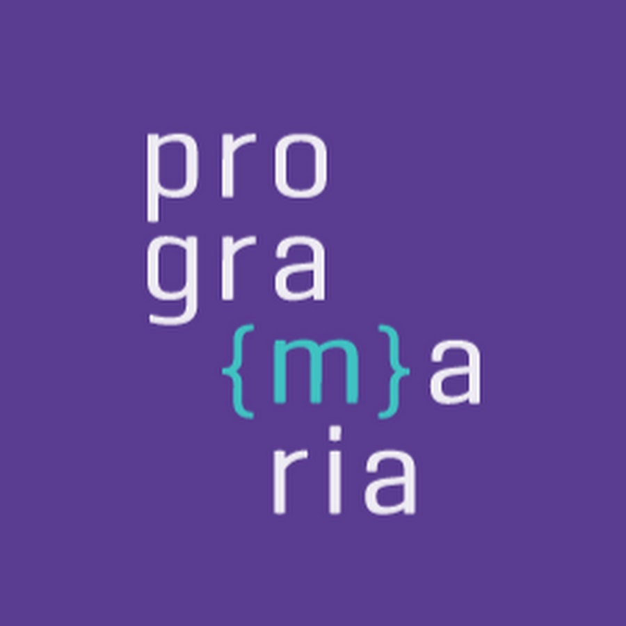
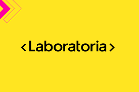
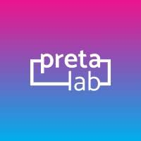
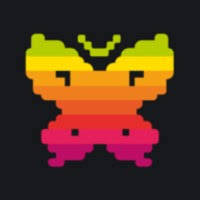
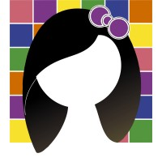

PrograMaria
A PrograMaria é uma organizção nacional
que incentiva mulheres (cis e trans) a aprender
programação e entrar no mundo da tecnologia.

Laboratória
A Laboratória é uma organização que atua
em vários países da América Latina com o
objetivo de capacitar mulheres para carreiras na economia digital.

Pretalab
A PretaLab é uma iniciativa que promove a conexão
e o fortalecimento de mulheres negras na tecnologia.

Womakerscode
A Womakerscode é uma organização que atua na área de tecnologia e inovação,
promovendo a inclusão digital e o desenvolvimento de habilidades para mulheres no mercado de trabalho.
Elas na IA
A Elas na IA é um programa ligado à Microsoft que oferece
aulas e treinamento sobre inteligência artificial e Phyton, com bolsas gratuitas.

Programa Meninas Digitais
O Programa Meninas Digitais é um projeto da Sociedade Brasileira de Computação (SBC)
que visa promover a inclusão digital de meninas e jovens mulheres na área de tecnologia.